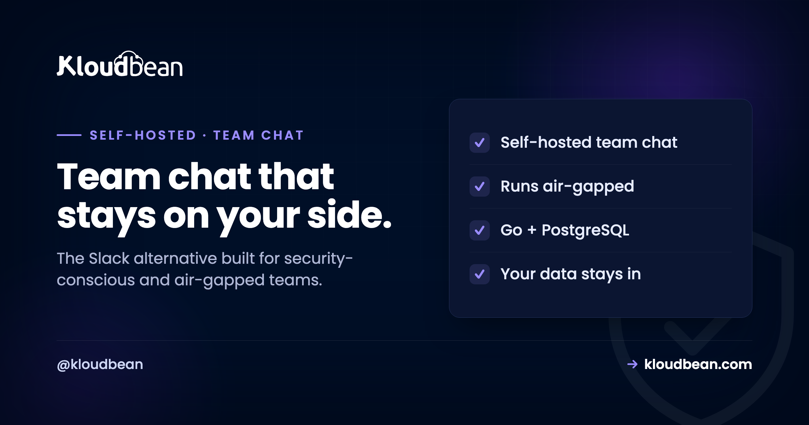

Self-Host Mattermost: Team Chat for When the Data Cannot Leave

Some teams cannot put their internal conversations on someone else's cloud. Not "would rather not," cannot: a security policy, a regulator, a client contract, or plain common sense says the messages stay on infrastructure they control. Mattermost is built for exactly that team. It is an open-source, self-hosted team chat that looks and works like the tools everyone knows, but it runs on your server, can be deployed in fully isolated environments, and keeps every message on your side of the fence. It gets compared to Rocket.Chat constantly, and they are both good, but they are aimed at different problems. Knowing which problem is yours is the whole decision.
Mattermost is an open-source, self-hosted team chat, a Slack alternative written in Go and backed by PostgreSQL. It focuses on internal team collaboration with channels, threads, and search, and it is a favourite of security-conscious, DevOps, and regulated teams because it can run on infrastructure you fully control, including air-gapped environments. Self-host it when internal team chat plus data control and compliance is the requirement and you want a focused, dependable stack. If you also need customer-facing conversations across WhatsApp, SMS, and live chat in the same tool, that is Rocket.Chat's territory. It runs as a standard app plus a PostgreSQL database, not a one-click install.
What Mattermost actually is
A focused, self-owned home for your team's conversations, and not much else, which is the point.
Mattermost is an open-source messaging platform for internal team communication: channels, threads, direct messages, search, integrations, and the ChatOps hooks that DevOps teams lean on to wire alerts and pipelines into chat. It is written in Go and stores its data in PostgreSQL, and production deployments run the database separately from the app. What sets its reputation is not a feature list but a posture: it is built to be self-sovereign, so you can deploy it entirely within your own infrastructure, right down to air-gapped environments with no outside connectivity, and keep full control of the data and the security policies around it.
That focus is deliberate. Mattermost is not trying to be a customer-support suite or an omnichannel hub. It is trying to be the internal chat that a bank, a government team, a defence contractor, or a privacy-conscious startup can run without a compliance argument. If that is you, the focus is a feature. If it is not, the next section will point you elsewhere.
Mattermost or Rocket.Chat? Same category, different job
This is the comparison everyone wants, so here it is without hedging.
Both are open-source, self-hostable, and perfectly capable Slack alternatives. The difference is scope. Mattermost concentrates on internal team chat and does it in a lighter, focused stack, with a strong lean toward DevOps workflows and self-sovereign, air-gapped deployments. Rocket.Chat casts a wider net: alongside team chat it does omnichannel, bringing customer conversations from WhatsApp, SMS, and live chat into the same tool, with more extensibility built around conversations. So the honest split is about who you are talking to. If it is your own team, and control and compliance matter most, Mattermost is the cleaner fit. If you also need to talk to customers across many channels in one place, self-hosting Rocket.Chat is the better read.
| Mattermost | Rocket.Chat | |
|---|---|---|
| Primary job | Internal team chat | Team chat plus omnichannel |
| Talks to | Your team | Your team and your customers |
| Leans toward | DevOps, security, air-gapped | Customer conversations, extensibility |
| Customer channels (WhatsApp, SMS, live chat) | Not the focus | Built in |
| Stack | Go and PostgreSQL | Node and MongoDB |
| Choose it when | Internal chat, data control, compliance | You also serve customers across channels |
Why self-host team chat at all
For a lot of teams the hosted tools are fine. For some, self-hosting is not a preference, it is a requirement.
Data control. Self-hosting keeps every message, file, and integration on infrastructure you own, which matters when a policy or a regulator says internal communications cannot live on a third-party SaaS. Air-gapped and regulated environments. Mattermost can run with no outside connectivity at all, which is precisely the setting where hosted chat is simply not allowed. Cost at scale. Hosted chat charges per user per month, so a large organisation pays a large recurring bill; a self-hosted deployment is a server cost that does not scale per seat. Auditability. When you run it, you control logging and retention rather than accepting a vendor's defaults.
Who shouldn't bother: a small team with no compliance pressure, comfortably inside a free or cheap hosted tier, for whom running a server is more work than the benefit. And if your real need is customer-facing omnichannel, reach for Rocket.Chat rather than bending Mattermost toward a job it is not built for. Self-host Mattermost when control, compliance, or scale make it the right call, which for a specific and serious set of teams it clearly is.
What it takes to run
Familiar and dependable: an app, a database, and a sensible amount of memory.
Mattermost runs as a Go application with PostgreSQL behind it, and its own guidance is to run the database separately from the app in production rather than on the same box. Plan for a couple of gigabytes of memory as a starting point and scale from there with your team. You put the app behind a reverse proxy with HTTPS and point it at a database, and the piece worth doing properly is that database, since it holds every message and every channel. A managed PostgreSQL keeps that data maintained and backed up and matches Mattermost's separate-database recommendation without you running a second box by hand.
Backups and access, because this holds your internal record
Team chat quietly becomes your organisation's memory, so protect it like one.
Your messages, channels, and users live in PostgreSQL, and uploaded files in your file store, so a real backup covers both: an automatic database dump plus the files, shipped off the server, with a restore you have tested once, per the backups guide. Access matters as much as backups here, because this is internal communication. Keep it behind HTTPS, control who can reach the admin surface, and if isolation is part of your requirement, lock access down to trusted IPs rather than exposing it to the open internet (private networking is available on Enterprise). For teams that need it, keeping the whole deployment inside a controlled network is not paranoia, it is the reason they chose to self-host in the first place.
What production adds to self-Host Mattermost
Mattermost suits a managed server well, and the platform can take on the parts that are not your team's job. You run it as a standard application across any of seven clouds, behind a managed reverse proxy with free auto-renewing SSL, pointed at a managed PostgreSQL that matches its separate-database guidance and is backed up automatically. Where isolation matters, locking access to trusted IPs keeps the deployment off the open internet (with private networking available on Enterprise), and running across multiple clouds and regions gives options for where the data physically lives. It is not a one-click app, but it is a well-understood app-plus-database deployment.
The honest boundary, which matters for a tool chosen on compliance grounds: the platform provides the infrastructure controls, the managed database, SSL, backups, and network isolation. Your conversations, your retention and access policies, and your organisation's own compliance obligations remain yours. Managed hosting gives you a solid, controllable place to run Mattermost. The governance around what is said in it, and proving your compliance, stays with your organisation, as it must.
If self-Host Mattermost was the symptom, not the cause
For the omnichannel alternative and the full comparison, self-hosting Rocket.Chat. If you are assembling a self-hosted stack, see best self-hosted tools. The database underneath is managed PostgreSQL, kept safe with server backups. If isolation is part of your requirement, what a VPC is explains private networking, and for the broader compliance picture, self-hosting Nextcloud covers files with the same own-it logic.
Prototype to production, without the babysitting.
Run the app as an always-on process with managed databases, Redis, object storage, and automatic backups beside it. Deploy from Git with live build logs, and keep the infrastructure someone else's problem.
- ✓ Managed databases
- ✓ Always-on processes
- ✓ Object storage
- ✓ Automatic backups
- ✓ Free SSL
- ✓ Git deploy
- ✓ Free migration
FAQ
What is Mattermost?
Mattermost is an open-source, self-hosted team chat and a Slack alternative, written in Go and backed by PostgreSQL. It provides channels, threads, direct messages, search, and integrations, with a strong DevOps and ChatOps lean. Its distinguishing feature is that it is built to run entirely on infrastructure you control, including air-gapped environments, which makes it a common choice for security-conscious and regulated teams.
Mattermost or Rocket.Chat, which should I self-host?
Choose by who you are talking to. Mattermost focuses on internal team chat in a lighter, focused stack, with strong support for DevOps and self-sovereign, air-gapped deployments. Rocket.Chat adds omnichannel, bringing customer conversations from WhatsApp, SMS, and live chat into the same tool. If internal team communication and data control are the priority, Mattermost fits; if you also serve customers across channels, Rocket.Chat is the better tool.
Can Mattermost run air-gapped?
Yes, and it is one of the main reasons teams pick it. Mattermost is designed to be self-sovereign, so it can be deployed entirely within your own infrastructure with no dependence on outside services, including fully air-gapped environments with no internet connectivity. That is exactly the setting where hosted chat tools are not permitted, which is why regulated and security-conscious organisations gravitate to it.
What database does Mattermost use?
PostgreSQL. Production guidance is to run the database separately from the application rather than on the same server, so a managed PostgreSQL is a natural fit: it keeps the data maintained and backed up and matches the recommended separate-database setup without you standing up a second box by hand. All your messages and channels live in that database, so it is the component to treat with care.
How much server does Mattermost need?
Plan for around two gigabytes of memory as a starting point, with the database running separately, and scale up as your team and message history grow. It is heavier than the lightest self-hosted tools but not demanding, and the separate-database model keeps the app itself lean. Right-size the server to your team and give the database room to grow.
How do I back up Mattermost?
Back up two things: the PostgreSQL database, which holds messages, channels, and users, and the file store for uploads. Ship both off the server automatically on a schedule and test a restore once so you know it works. Because team chat becomes your organisation's internal record, treat these backups as important operational data, not an afterthought.
Is self-hosting Mattermost cheaper than hosted team chat?
At scale it usually is. Hosted chat tools charge per user per month, so costs rise with headcount, while a self-hosted Mattermost is a server and database cost that does not scale per seat. For a small team a free hosted tier may be cheaper in effort terms, but for a large organisation, and especially one that would need an enterprise plan for compliance features anyway, self-hosting can be markedly more economical.
Is Mattermost a one-click app on Kloudbean?
No. Mattermost runs as a standard application with a separate PostgreSQL database rather than a one-click install. The deployment is well understood: a right-sized server, a managed PostgreSQL, free SSL, and IP allow-listing where access needs to stay tight. The platform keeps the server, database, and network controls healthy, while your conversations and compliance policies remain yours.